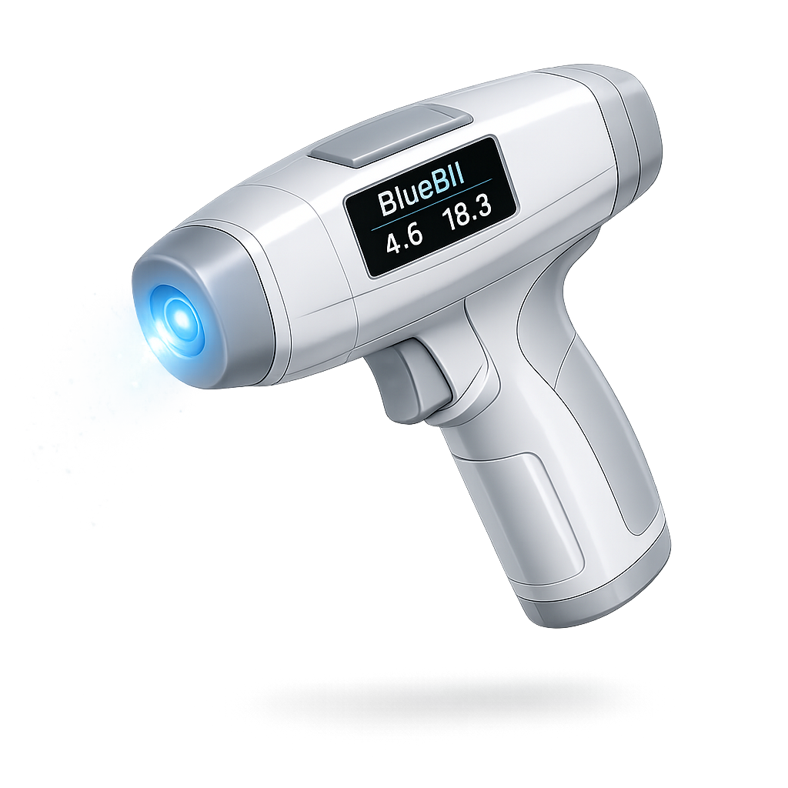
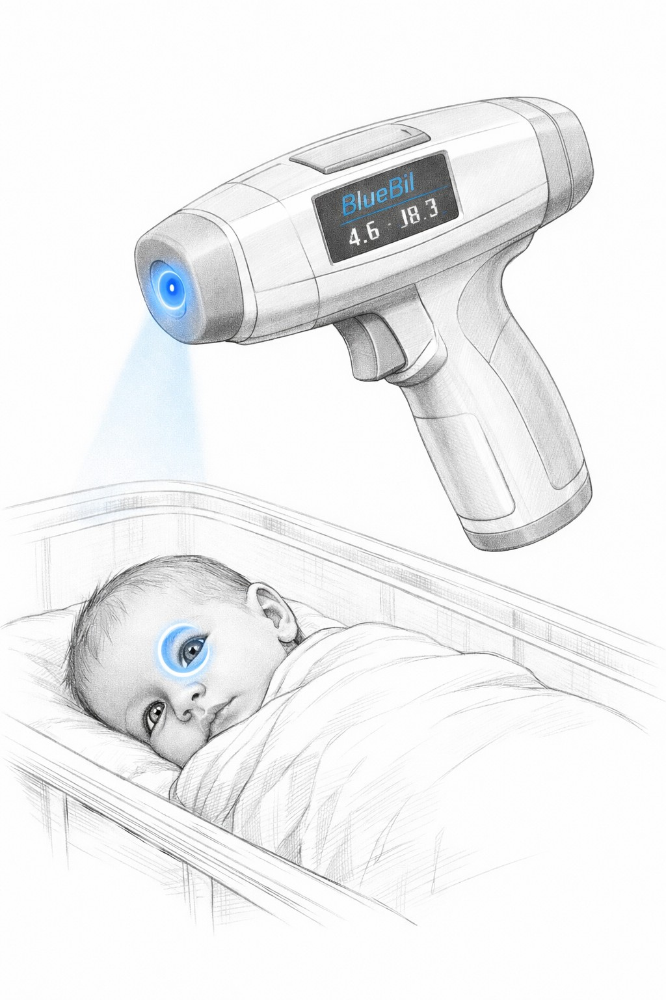

Seeing jaundice
differently.
BlueBil is a handheld optical device that detects neonatal jaundice through the eye, not the skin, delivering fast, accurate, equitable bilirubin readings regardless of a baby's skin tone.
affected by jaundice
low-income countries

The Problem
Current diagnostics fail where it matters most
Neonatal jaundice is one of the most common conditions requiring medical attention in newborns. Untreated, severe hyperbilirubinemia crosses the blood-brain barrier, causing permanent neurological damage, cerebral palsy, deafness, or death.
Invasive heel-prick blood tests are accurate but painful, infection-prone, and rely on lab infrastructure unavailable in most of the world. Transcutaneous bilirubinometers measure skin reflectance, but melanin and skin thickness systematically bias their readings, leaving darker-skinned babies underserved.
Neither method works reliably during phototherapy — the exact moment when continuous monitoring is most critical.
Relative accuracy — illustrative. BlueBil in pre-clinical validation phase.
Our Solution
The eye doesn't lie about bilirubin
The ocular sclera yellows predictably with bilirubin deposition, independent of skin tone. BlueBil measures this directly — actively, accurately, equitably.
Scleral Measurement
By measuring blue light absorption in the white of the eye rather than skin, BlueBil completely bypasses melanin interference — delivering consistent accuracy across all demographics.
3-Wavelength Optics
A 470 nm blue LED targets bilirubin. A 530 nm green LED corrects for hemoglobin overlap. An 850 nm IR LED verifies probe distance. Three channels, one robust measurement.
Results in <3 Seconds
A six-stage firmware state machine handles positioning, measurement, and verification automatically. Results display in mg/dL on an integrated OLED — no lab, no consumables.
Safe by Design
All ocular LED exposures held below established safety thresholds (blue: ≤0.1 mW/cm², IR: ≤140 mW/cm²). Non-contact — the device never touches the eye surface.
Built for LMICs
Reusable, consumable-free, infrastructure-independent. Target cost under $400 for low-income market entry. Validated with clinicians in Ghana and Detroit.
Works During Phototherapy
Because measurement is taken from the eye rather than the skin, phototherapy light doesn't interfere — enabling continuous non-invasive monitoring throughout treatment.
How It Works
From bedside to result in seconds
Position
The IR channel pulses continuously, displaying a live distance bar on the OLED. The device confirms correct probe-to-eye placement before proceeding.
~1 secondMeasure
Blue and green LEDs fire in sequence. 16-sample ADC averaging captures reflectance. Two IR distance checks bracket the measurement for validation.
~1.5 secondsResult
The ESP32 applies the Beer-Lambert ratiometric model. Bilirubin concentration displays in mg/dL with a treatment recommendation — no lab required.
<0.5 seconds
The Device
Pistol-grip. Non-contact. NICU-ready.
Modeled ergonomically after a tympanic thermometer for single-handed bedside use. A rubber barrel guard creates a light seal against the periorbital region, blocking ambient interference. The ABS enclosure houses all electronics — battery, OLED, PCB, and sensors — with no consumables required.
The Team
Built by engineers who care
Four University of Michigan co-founders with distinct backgrounds, united by a shared conviction that every baby deserves equitable care.